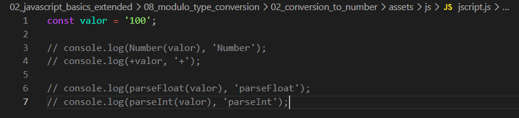

Conversion to Number
Intro
Aqui teremos o seguinte codigo de exemplo:

Aqui teremos o seguinte codigo de exemplo:

Iremos supor que tenhamos um formulario em nossa pagina web, quando recebemos o valor de um input de um usuario como um valor numerico, sempre iremos receber esse valor como uma string.
Com isso criamos uma variavel a qual atribuimos o valor de 100 porem, em forma de string '100'.
Com isso iremos verificar como tratar esse dado que precisamos para receber em forma de numero fazendo uma conversao.
Tanto o Number(variavel) ou +variavel. Ambos tem basicamente o mesmo proposito, converter um valor de uma string com numero, para numero.
Legibilidade: O Number(valor) é muito mais claro para quem está lendo seu código. O +valor é mais "ninja", mas pode ser confundido com uma operação de soma se não houver cuidado.
Performance: O operador + tende a ser ligeiramente mais rápido em alguns motores de JavaScript (como o V8 do Chrome), mas a diferença é tão minúscula que quase nunca justifica escolher um por causa disso.
Basicamente consegue fazer o mesmo que Number() ou +, porem ele tambem consegue fazer algo como, ignorar no caso desse valor passado ter tambem string misturado com o numero.
Porem o parseFloat(), se tivermos um valor float (flutuante (valor com virgula)), ele ira aceitar esse valor.
parseInt() nao ira aceitar o valor com numero float ele ira passar o valor sem a separacao por virgula ou ponto ou seja, ele irá retornar apenas a parte inteira, descartando qualquer valor após o ponto decimal
parseInt() aceita dois parametros o segundo sendo opcional, o segundo valor passado e para converter o valor para por exemplo uma base 2 (binario).
parseInt: ignora as casas decimais (retorna o inteiro).
parseFloat: mantém as casas decimais.